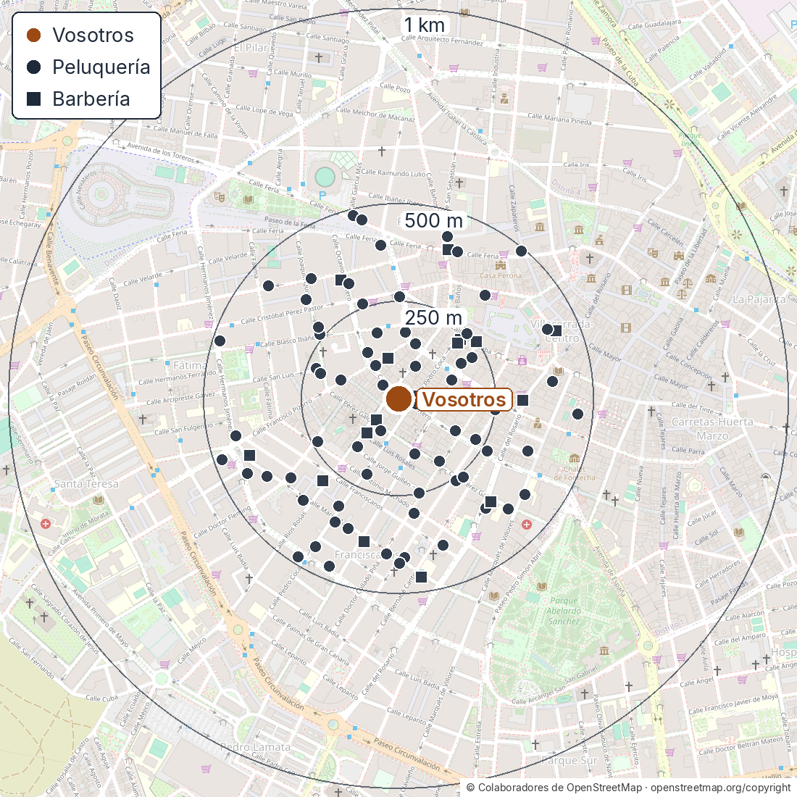

Tenéis mucha competencia a la puerta y una clientela que habla muy bien de vosotros. Hoy no hemos encontrado una web vuestra donde quien os conoce poco vea horario, precios y un botón para llamar. Eso es lo que arreglaríamos.
Más cerca que cualquier barbería hay tres peluquerías: Actuall (41 m), My Bell (46 m) y MG Peluqueros (51 m). La barbería más cercana es Barber Shop Gentleman, a 79 m. Dentro de 500 m cuento 16 negocios de caballero.
Julia López (a 790 m) publica en su web «Corte Caballero desde 11 €». NenaMelenas (a 868 m) enseña en Treatwell (captura del 17/11/2026) corte de hombre 16 €, de niño 14 € y horas libres para reservar. Vuestros precios no los hemos encontrado publicados.
Nota 4,8 con unas 132 opiniones y clientes de décadas. Es lo que una web debe poner al principio.
«Llevo más de 34 años cortándome el pelo allí y nunca he tenido ningún problema.»
Opinión publicada en Google, reproducida en resserv.com (17/11/2026)
Haríamos una web sencilla para el móvil, con horario, dirección, botón de llamar y, si queréis, precios y opiniones. Unas preguntas cortas por WhatsApp y un presupuesto cerrado, por escrito. Gratis y sin compromiso.
WhatsApp · [número de la empresa]
| Dato | Fuente | Fecha |
|---|---|---|
| Peluquerías y distancias (33/85/206/273 a 250/500/1000/1500 m) | OpenStreetMap, sin las 9 tiendas de productos | 17/11/2026 |
| Caballero y barbería | Etiqueta o nombre con «barber» | 17/11/2026 |
| 4,8 y unas 132 opiniones | Directorios que copian la ficha (secundaria) | nov. 2026 |
| Precios de Julia López y de NenaMelenas | Su web y su ficha de Treatwell (capturas guardadas) | 17/11/2026 |
| Reseña | Google, vía resserv.com | 17/11/2026 |
| Sin web vuestra | 7 dominios probados, sin respuesta | 19/11/2026 |
Mapas y datos © colaboradores de OpenStreetMap · openstreetmap.org/copyright. Preparado con ayuda de asistentes de inteligencia artificial y supervisado por Iván, el responsable.